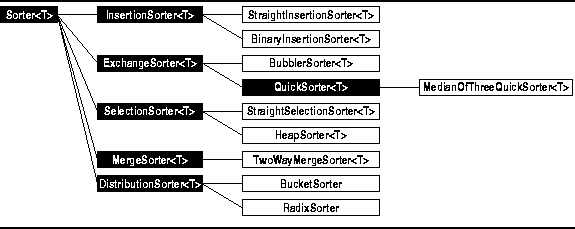

Data Structures and Algorithms
with Object-Oriented Design Patterns in C++
Data Structures and Algorithms
with Object-Oriented Design Patterns in C++This chapter describes nine different sorting algorithms. These are organized into the following five categories:
As shown in Figure ,
the sorter classes have been arranged in a class hierarchy
that reflects this classification scheme.
,
the sorter classes have been arranged in a class hierarchy
that reflects this classification scheme.

Figure: Sorter Class Hierarchy
Program defines five abstract sorter class templates:
InsertionSorter<T>,
ExchangeSorter<T>,
SelectionSorter<T>,
MergeSorter<T> and
DistributionSorter<T>.
Notice that these classes are all trivial (i.e., empty)
extensions of the Sorter<T> abstract base class.
 Copyright © 1997 by Bruno R. Preiss, P.Eng. All rights reserved.
Copyright © 1997 by Bruno R. Preiss, P.Eng. All rights reserved.